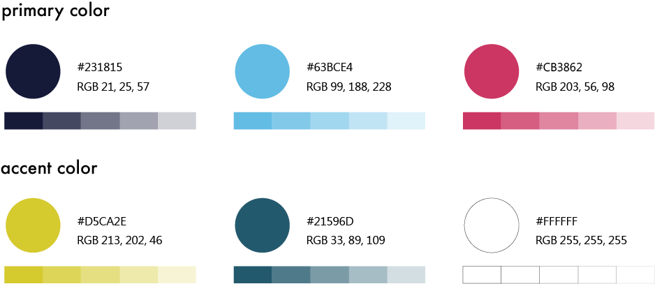

Overview
This project was commissioned by the Tainan City Government to build the official digital home for the 2023 Tainan Art Festival. The website needed to present large volumes of event content clearly while staying visually flexible across many different performance styles and campaign visuals.
Design Focus
The festival site supports bilingual communication, responsive layouts, and a visual system that can adapt to diverse event media. The goal was to make key festival information easy to discover while preserving the energy of the "Young Dreams" theme.
- Clear content hierarchy for schedules, programs, and announcements.
- Consistent behavior across desktop, tablet, and mobile devices.
- Flexible modules that support changing campaign artwork.
Outcome
The final website delivered a scalable event platform that improved discoverability and public access to festival activities, while giving organizers a dependable structure for updates during the campaign period.

Next Projects